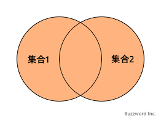
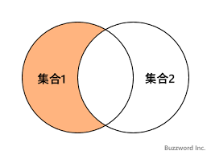

集合演算
集合に対して論理的な法則を適用して新たな集合を求める演算を言います。
集合演算には以下の種類があります。
- 和
- 差
- 直積
- 積
- 商
和
OR演算を意味し、和両立の場合にのみ成立する演算です。
ある集合(R)ともう片方の集合(S)の2つに含まれている要素からなる集合を求めます。

和両立
演算対象の2つの集合の構造が完全に一致していることを言います。
また、和両立に関して、「属性の数」と「対応する属性のドメイン」が同じであるという内容が平成28年度の午前Ⅱ問15で出題されています。
UNION演算子を使用します。
以下の例では第一世代と第二世代のポケモンを格納するテーブルから、第一世代と第二世代のポケモンの集合を求めています。
SELECT number, name, type1, type2
FROM generation1
UNION
SELECT number, name, type1, type2
FROM generation2;
和両立でないケースとは以下のような場合です。
SELECT number, name
FROM generation1
UNION
SELECT number, name, type1, type2
FROM generation2;
上の例では構造が異なっているため、演算に失敗します。
簡単にいうと、全てのカラムが一致していないと成立しません。
UNION演算子は和演算によって発生した重複を自動で取り除きますが、そのまま出力したい場合にはUNION ALL演算子を使用します。
もっとも、リレーショナルモデルの性格上、レコードが重複することはあり得ないので、使用する機会が少ないですが、パフォーマンスの観点から使用することがあります。
SELECT number, name, type1, type2
FROM generation1
UNION ALL
SELECT number, name, type1, type2
FROM generation2;
差
ある集合(R)に属して、もう片方の集合(S)に属さない要素からなる集合を求める演算です。

EXCEPT演算子を使用します。
以下の例では第一世代に含まれて、第二世代に含まれていないポケモンの集合を求めています。
そんなポケモンはいませんが、、、
SELECT number, name, type1, type2
FROM generation1
EXCEPT
SELECT number, name, type1, type2
FROM generation2;
EXCEPT句を使用しなくても、NOT EXISTS句やNOT IN句などを使用して実現できます。
直積
直積とは集合Rと集合Sの全ての組み合わせからなる集合を求めることを言います。
クロス結合が該当します。
また、直積と選択によって等結合演算を表すことができる内容が平成30年の午前Ⅱの問9で出題されています。
等結合演算
例えば、比較演算子が’=‘であったなら、属性の値が同じタプルどうしが結合されます。 そうすると結合されたテーブルには同じ属性の値を持つタプルが出来ます。 このような結合演算を等結合演算といいます。
DELPHI5より引用。
積
集合Rと集合Sのどちらにも属する要素からなる集合を求める演算です。
AND演算を意味します。

INTERSECT演算子を使用します。
以下の例では第一世代と第二世代どちらにも属するポケモンの集合を求めています。
そんなポケモンはいませんが、、、
SELECT number, name, type1, type2
FROM generation1
INTERSECT
SELECT number, name, type1, type2
FROM generation2;
商
リレーションR・S・Tの間で直積演算S × T = Rが成立する場合に、RとSの商演算R ÷ S = Tが成立します。
直積演算を「掛け算」とすると、商演算は「割り算」となります。